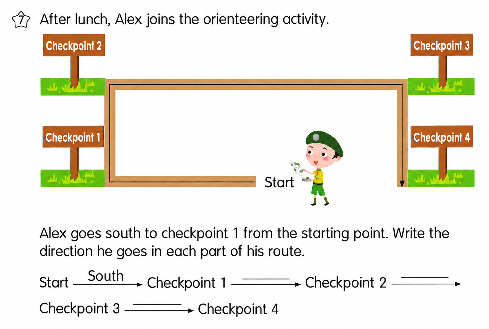
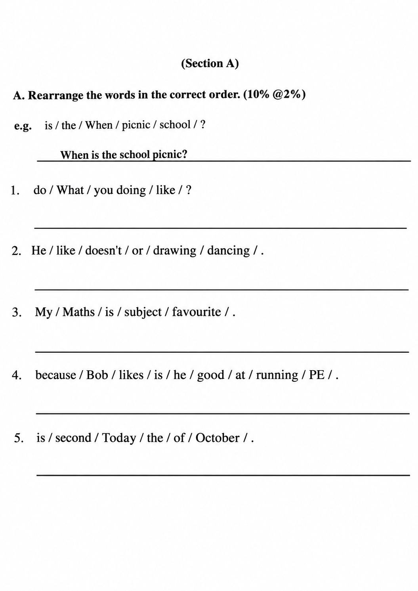
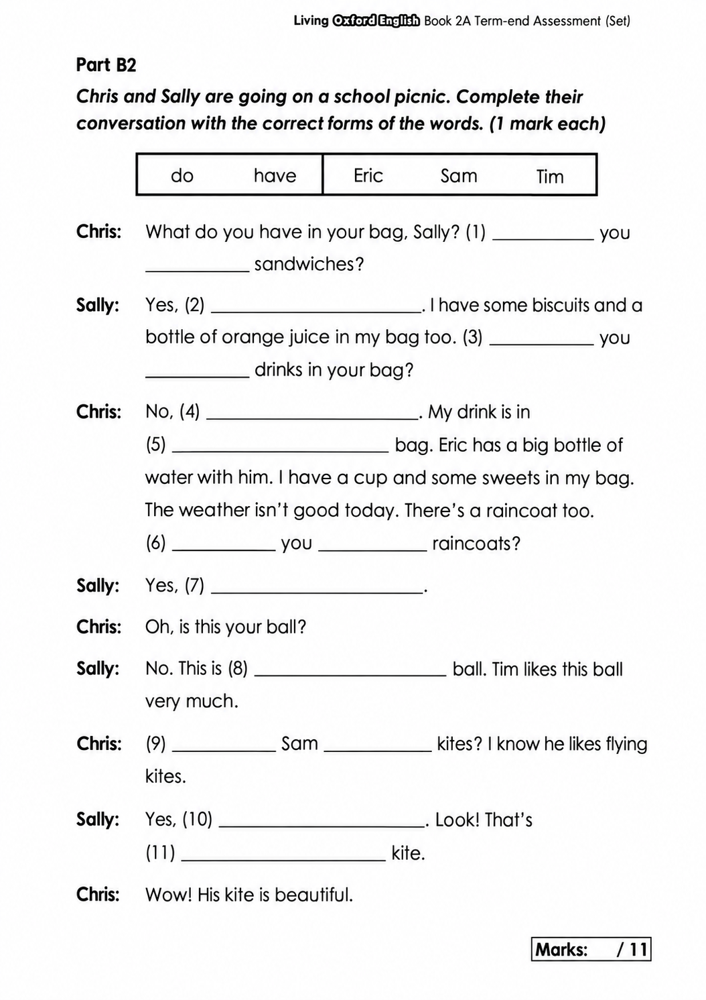
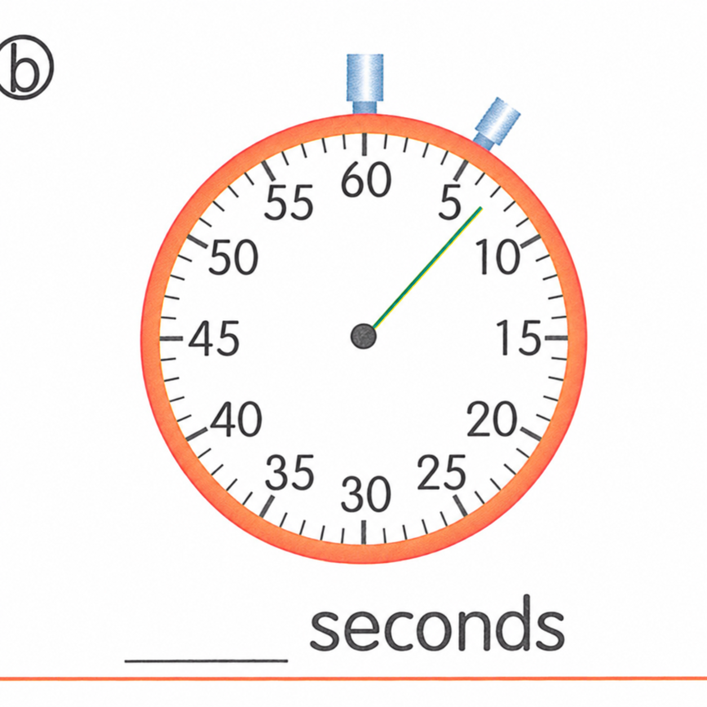

已掌握
| # | 中文意思 | 例句/提示 | 英文默写 | 已掌握 |
|---|---|---|---|---|
| noun 名词 | ||||
| 1 | 生日 | My is in May. | ||
| 2 | 健身房 | We exercise in the . | ||
| 3 | 皮毛 | The rabbit has soft . | ||
| 4 | 小组 | We work in a . | ||
| 5 | 斑马 | The has black and white stripes. | ||
| 6 | 未来 | I will study hard in the . | ||
| 7 | 空气 | We need to breathe. | ||
| 8 | 梦想 | My is to become a doctor. | ||
| 9 | 司机 | The bus stopped at the crossing. | ||
| 10 | 日记 | I write in my every evening. | ||
| verb 动词 | ||||
| 11 | 邀请 | I my friend to my home. | ||
| 12 | 采摘；挑选 | We apples from the tree. | ||
| 13 | 隐藏 | The children behind the tree. | ||
| 14 | 找到 | I cannot my pencil. | ||
| 15 | 保持 | Please the classroom clean. | ||
| phrase 短语 | ||||
| 16 | 校车 | We take the every morning. | ||
| adjective 形容词 | ||||
| 17 | 柔软的 | The fur is . | ||
| 18 | 忙碌的 | Mum is cooking dinner. | ||
| 19 | 不同的 | Our bags are colours. | ||
| 20 | 湿润的；湿的 | My shoes are from the rain. | ||
| # | 单词/词组 | 中文意思 | 例句/说明 | 已掌握 |
|---|---|---|---|---|
| adjective 形容词 | ||||
| 1 | fantastic | The show was fantastic. | ||
| 2 | worried | On the second day I was not worried. | ||
| 3 | cheerful | Sarah is cheerful — she always smiles. | ||
| 4 | magical | The story is about a magical forest. | ||
| noun 名词 | ||||
| 5 | fish | I can see a fish in the water. | ||
| 6 | balloon | The red balloon is floating in the air. | ||
| 7 | line | Write your name on the first line. | ||
| 8 | energy | Turning off the lights saves energy. | ||
| 9 | receipt | Eric has a receipt from a shop. | ||
| 10 | Boxing Day | My birthday is on Boxing Day. | ||
| noun phrase 名词短语 | ||||
| 11 | department store | We shop at the department store. | ||
| 12 | a slice of pizza | May I have a slice of pizza, please? | ||
| 13 | a pot | Put some water into a pot. | ||
| 14 | theme park | She went to a theme park. | ||
| 15 | a purse | I gave her a purse. | ||
| 16 | a handbag | They gave me a handbag. | ||
| 17 | packet of French fries | Can I have a packet of French fries? | ||
| 18 | daily routine | Lester is writing about his daily routine. | ||
| 19 | phrasal verb | The expression "turn off" is a phrasal verb. | ||
| verb 动词 | ||||
| 20 | describe | I can describe the picture. | ||
| preposition 介词 | ||||
| 21 | between | His classroom is between Classroom 3A and Classroom 3C. | ||
| phrase 短语 | ||||
| 22 | hang up | Please hang up your coat. | ||
| 23 | take care | Take care! | ||
| verb phrase 动词短语 | ||||
| 24 | make paper toys | Can you make paper toys? | ||
| 25 | listening to music | He likes listening to music. | ||
| 26 | go for walks | Dogs need to go for walks every day. | ||
| 27 | prepare food | Lester is helping his mum prepare food for his party. | ||
| adverb 副词 | ||||
| 28 | off | This shirt is 40% off. The bird flew off. | ||
| quantifier 数量限定词 | ||||
| 29 | a lot of | I get a lot of presents at Christmas. | ||
| time phrase 时间短语 | ||||
| 30 | half past six | I always get up at half past six. | ||
| # | 中文意思 | 例句/提示 | 英文默写 | 已掌握 |
|---|---|---|---|---|
| time/date 时间日期 | ||||
| 1 | 十月 | is the tenth month. | ||
| time unit 时间单位 | ||||
| 2 | 日 | A has 24 hours. | ||
| 3 | 时 | An has 60 minutes. | ||
| numbers 数字 | ||||
| 4 | 6 | is 6. | ||
| 5 | 9 | is 9. | ||
| 6 | 11 | is 11. | ||
| 7 | 13 | is 13. | ||
| 8 | 17 | is 17. | ||
| ordinal numbers 序数 | ||||
| 9 | 第二 | This is the shape. | ||
| solid shape 立体图形 | ||||
| 10 | 四棱锥 | A has one quadrilateral base and four triangular side faces. | ||
| 11 | 五棱锥 | A has one pentagonal base and five triangular side faces. | ||
| 12 | 圆柱 | A has two circular faces. | ||
| 13 | 曲面 | A cylinder has a . | ||
| plane shape 平面图形 | ||||
| 14 | 长方形 | A has four right angles. | ||
| geometry 几何 | ||||
| 15 | 直角 | A is 90 degrees. | ||
| # | 单词/词组 | 中文意思 | 例句/说明 | 已掌握 |
|---|---|---|---|---|
| numbers 数字 | ||||
| 1 | 3-digit number | A 3-digit number has three digits. | ||
| operations 运算 | ||||
| 2 | addition | Addition means putting numbers together. | ||
| geometry 几何 | ||||
| 3 | parallel | Parallel lines never meet. | ||
| 4 | adjacent side | These are adjacent sides. | ||
| 5 | dotted line | Draw a dotted line between the two points. | ||
| question word 题目词 | ||||
| 6 | calculate | Calculate the answer. | ||
| 7 | count | Count from 1 to 10. | ||
| 8 | backwards | Count backwards from 20. | ||
| comparison 比较 | ||||
| 9 | most | Which group has the most? | ||
| time/date 时间日期 | ||||
| 10 | hour hand | At three o'clock, the hour hand points to 3. | ||
| 11 | common year | A common year has 365 days. | ||
| 12 | small division | The minute hand moves one small division in one minute. | ||
| 13 | second hand | The second hand goes around the clock once in one minute. | ||
| position 位置 | ||||
| 14 | above | The clock is above the board. | ||
| operations calculation 运算 | ||||
| 15 | subtract A from B | "Subtract A from B" means B - A. | ||
| 16 | quotient | The quotient is the answer in division. | ||
| 17 | horizontal form | Write it in horizontal form. | ||
| 18 | checking | Checking by addition shows that 9 - 4 = 5 is correct: 5 + 4 = 9. | ||
| teacher math vocabulary 老师数学词汇 | ||||
| 19 | finish | Please finish the calculation. | ||
| currency money 货币 | ||||
| 20 | dollar | One dollar has 100 cents. | ||
| 21 | coin | The coin is round. | ||
| measurement 测量 | ||||
| 22 | length | Find the length of the line. | ||
| 23 | gram | One gram is one thousandth of a kilogram. | ||
| 24 | kilogram | One kilogram is 1,000 grams. | ||
| 25 | pointer | The pointer on the scale shows 2 kg. | ||
| position order 位置和顺序 | ||||
| 26 | following | Answer the following questions. | ||
| geometry tool 几何工具 | ||||
| 27 | set square | A set square helps us draw angles. | ||
| directions tool 方向工具 | ||||
| 28 | compass | A compass shows directions. | ||
| 句型结构 | ||||
| 29 | ... is to the north of ... | The playground is to the north of the hall. | ||
| plane shape 平面图形 | ||||
| 30 | trapezium | A trapezium has exactly one pair of parallel sides. | ||



